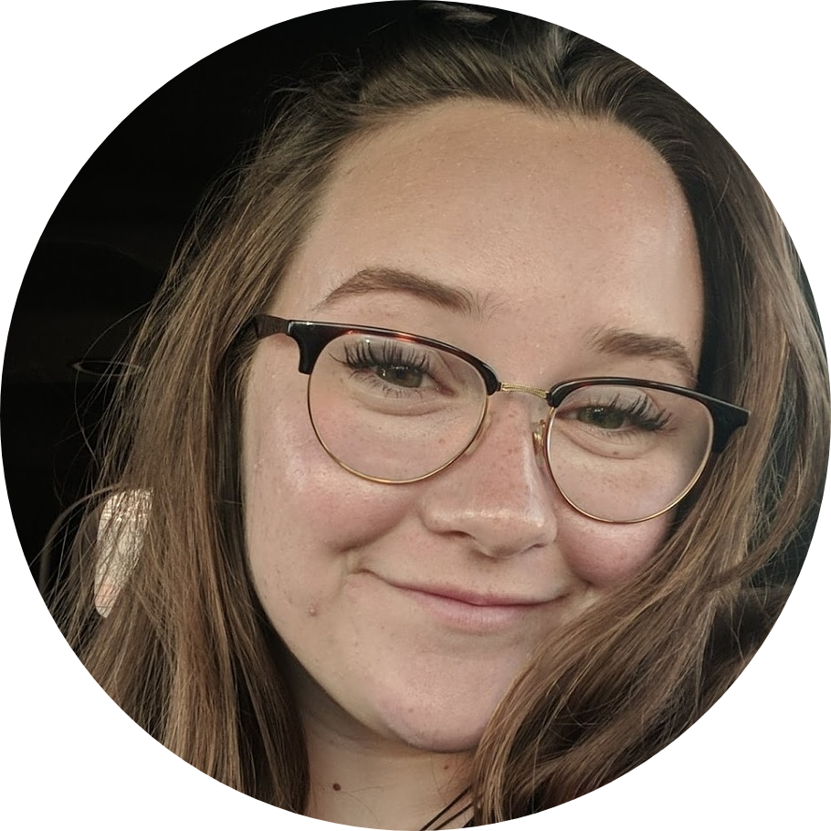
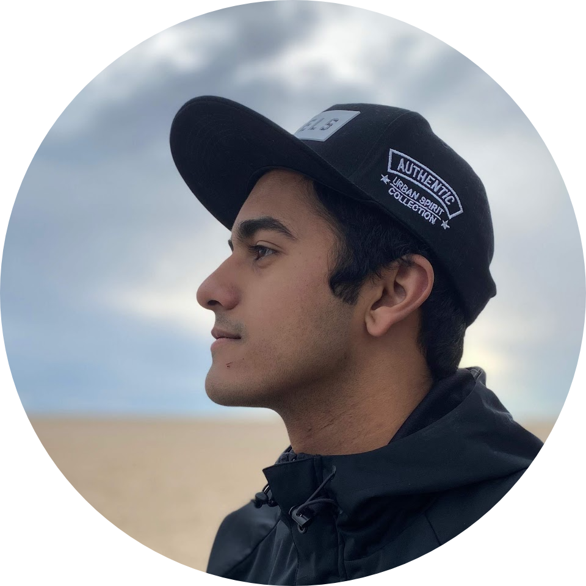
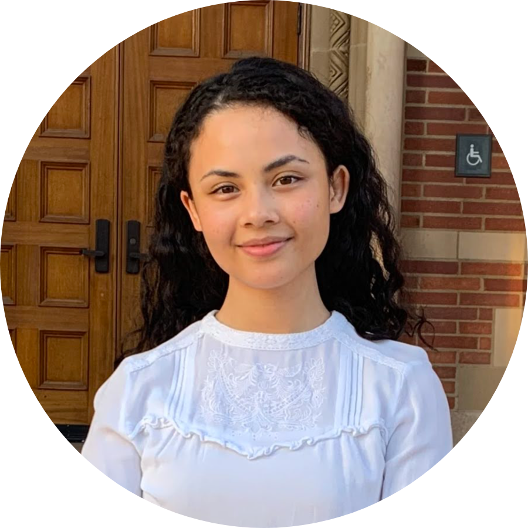
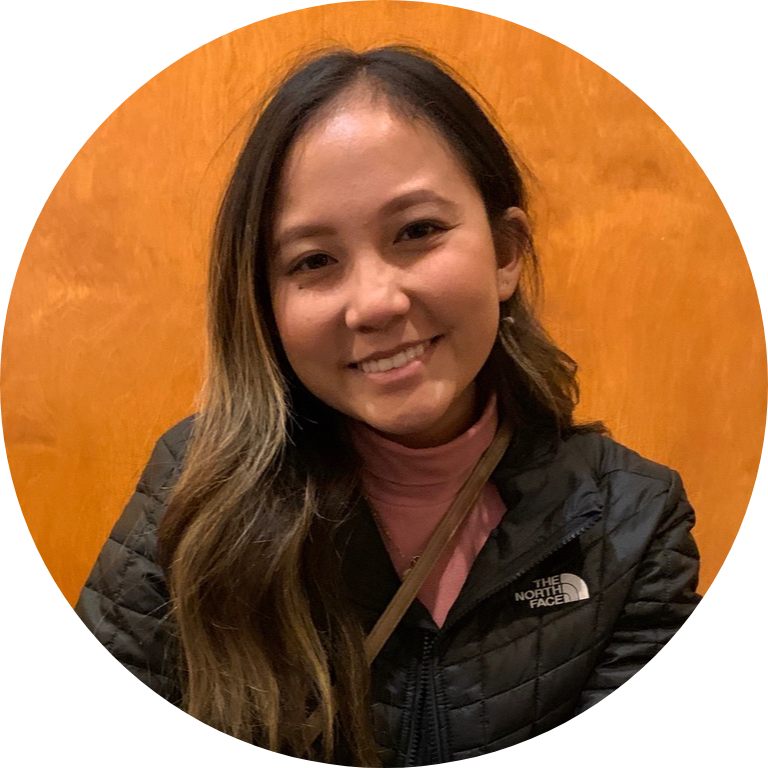
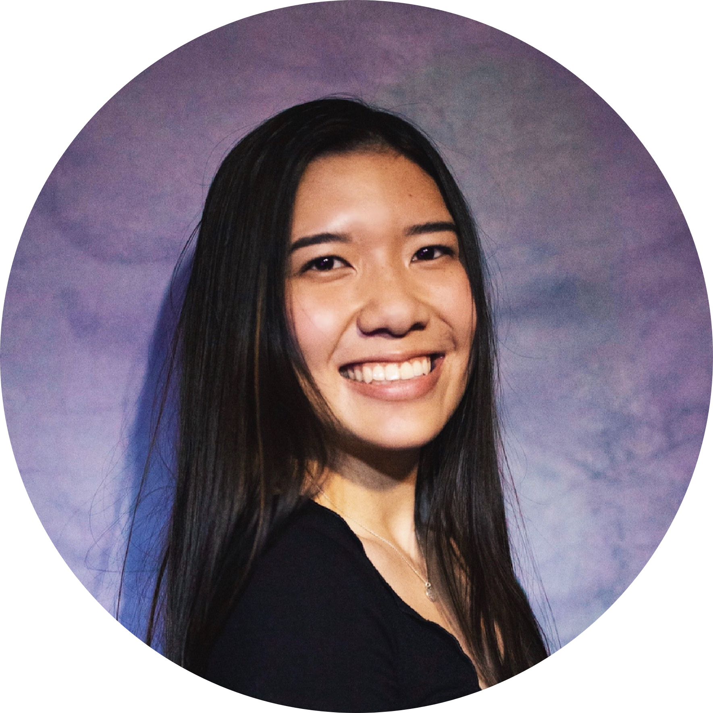

President
Jay Kim-Turner is the founder and president of Masked Heroes Operation.

Jay Kim-Turner, Founder and President
I am a sophomore attending the University of California, Berkeley studying political science and economics. In the past, I have heavily been involved in speech and debate events, with a particular emphasis on Parliamentary debate and Impromptu speech. I had the high honor of serving as President of my high school’s Speech and Debate team during my senior year. Some things I like to do in my free time are watch and play sports, TV shows, and movies, as well as exercise.I started the Masked Heroes Initiative because I believe that we cannot sit on the sidelines and expect for COVID-19 to disappear. It is up to us — all of us — to actively defeat it together and put this crisis behind us.
Finance
Finance is divided into two subdivisions: External Finance and Internal Finance. External Finance is responsible for creating new avenues and ideas of fundraising, while Internal Finance is responsible for the recording, logging, and reporting of all financial transactions and activity.


Brendan Tsuda, Director of External Finance
Hey everyone! My name is Brendan Tsuda and I am a senior at UC Berkeley, majoring in Chemical Biology and minoring in Bioengineering. During college, I spend most of my time reaching out to and mentoring at local elementary and middle schools with students in STEM as a Site Leading Coordinator in Berkeley Engineers and Mentors. In my free time, I enjoy playing basketball and tennis, cooking, and traveling. My role in MHI is to assist in gathering funds for the organization.
Carolynn Pham, External Finance Associate
I am a second year pursuing a Bachelor of Science degree in Psychobiology with a minor in Gerontology at University of California, Los Angeles. I wholly enjoy working with elders, and I hope to make my passion for geriatric medicine into a career in the future, alongside working to raise awareness on elder abuse, and contributing wholeheartedly to geriatric’s research to make a difference. Outside of MHI, I am in a program that supports and cares for patients with dementia, an internship supporting surgical doctors in the hospital, a research lab on neurological brain diseases, and a Pre-Medical club. In my free time, I enjoy reading, exploring philosophy, poetry, spending quality time, and helping others.
Adila Ahmed, External Finance Associate
Hello! My name is Adila Ahmed and I am an incoming freshman at UCLA pursuing a Bachelor's degree in Biochemistry on the premed track. I plan to pursue a career in the medical field with a potential focus in neurology or cardiology. At the high school level, I was involved in Mock Trial, Speech and Debate, TedX, Science Olympiad and various other extracurriculars that allowed me to work on my public speaking and communication skills, strengthen my leadership abilities, and discuss important topics in our world. As a part of External Finances in MHI, I mainly work on fundraising, applying for grants, and communicating with businesses to cooperate with. Outside of academics, I enjoy mentoring middle school students in Los Angeles county and tutoring students in STEM. In my free time, I enjoy dancing, music, playing tennis, watching a lot of Asian dramas, and exploring my Indian heritage!
Brian Trinh, Director of Internal Finance
Hello, my name is Brian Trinh. I am a student at California State Polytechnic University, Pomona pursuing a Bachelor’s degree in Chemical Engineering and minors in Mechanical Engineering and Materials Engineering. I love two things: math and piano. Piano is my favorite hobby because music is so universal and a great way to convey emotions. I am also involved with VSA in Cal Poly Pomona. Masked Heroes Initiative is a way I can give back to the community by supplying PPE to those who desperately need it. In MHI, I oversee all internal financial activities of MHI to ensure proper management of funds.
Kenton Trinh, Internal Finance Associate
Hi! My name is Kenton Trinh and I am the youngest member of this organization. I am currently a senior at Valencia High School. I plan to possibly study chemistry or music when I get into college. In my free time, I like to play video games with my brother, talk with friends, and read. As Secretary, I document weekly meetings, compile biweekly reports on all donations and expenditures at MHI, and assist in any and all projects.
Jae Jeon, Internal Finance Associate
Hey! My name is Jae Jeon and I am a second-year Psychobiology major at UCLA. I am staying in South Korea for the fall quarter. In the future, I hope to pursue a career in medicine, specifically in adolescent psychiatry. My role in MHI is to organize the receipts and keep track of all sources of income and spending at MHI and the UCLA branch. Outside of MHI, I am currently assisting research in stroke and stroke recovery, and I work part-time at a Vietnamese restaurant. I also work as a TA at an English academy, where I tutor middle school kids after school. In my free time, I like to eat outside with my friends, exercise, or watch TV shows.
Technology
Technology manages our website and blog, and it makes any new or updated information uploaded and readily available.


Emma Wood, Director of Technology
Hello! My name is Emma Wood, and I'm a freshman at UC Berkeley studying Electrical Engineering and Computer Science.
Daanesh Jamal, Head Blog Editor
Hello! I am a rising freshman who will attend Rice University in the fall with a major in Political Science and a Pre-Law Emphasis. In high school, I participated in the Parliamentary, Speech & Debate Club, Academic Decathlon, and TEDx Programs, which all kindled my passion for learning about and discussing big issues. I fed my desire to get involved in my community by volunteering in several political campaigns, including runs for the California State Senate and U.S. House of Representatives. I hope to marry my love of problem-solving and appreciation for community service as I work as the Assistant Operations Officer. Feel free to contact me at dhj1@rice.edu if you have any questions about MHI.
Sunay Dagli, Technology Associate
Hey! I am a sophomore at UC Berkeley, where I am pursuing an Energy Engineering major in the College of Engineering. I oversee all technological aspects of MHI, including creating and managing this website. I'm passionate about the intersection between software development and impact-driven fields such as sustainability. I serve as the Treasurer of the Institute of Electrical and Electronics Engineers (IEEE) Branch at UC Berkeley, and as a Mentor in the Berkeley Engineers and Mentors Club, which aims to provide equal STEM education access to the Bay Area. My interests include data structures, sustainable technologies, and software development. Contact me at sunaydagli@berkeley.edu!
Advising and Operations
Advising provides business, strategy, and leadership advising for the organization, and is in charge of the maintenance of all university organization level members.



Saleem Haider, Director of Advising
As a 19-year-old student at California State University, Fullerton, I am a Junior in the Mihaylo Business Honors Program. It has been my pleasure to have acted as a TEDx speaker for three concurrent years, and I am currently president and founder of TEDxCSUF. I will be a returning intern at PwC in their Deals Advisory, FDD practice for the summer of 2021. I currently serve as an Executive Director of PFrofessional Development for the Business Honors Program and am on a 3-year graduation track from high school to graduate, CPA Eligible, with 165/150 semester units. Contact me at saleemhaider01@csu.fullerton.edu with any inquiries or opportunities.
Rainey Williams, Director of Operations
Hello! My name is Rainey Williams and I am a second-year studying Linguistics and Computer Science at UCLA. In the future I hope to work in the field of computational linguistics. I organize wholesale purchases for masks and other supplies for MHI. I firmly believe in the mission of MHI and I’m confident in our team’s ability to make a difference during this pandemic. In my freetime I like to draw, watch documentaries, and explore LA (pre-covid times of course!).
Darlene Kabigting, Operations Associate
I am a second year student at UCLA, currently pursuing a degree in Biochemistry. In the future, I plan to work in healthcare or a career that allows me to make advances in medicine. As a member of MHI, I oversee the UCLA branch as co-president along with organizing mask donations as an Operations committee member. Joining MHI has allowed me to work with underprivileged and underrepresented communities, something I have been passionate about my whole life. In my free time, I like to journal, listen to music, play video games and go on adventures!
Megan Vu, Operations Associate
I am a second-year attending the University of California, Los Angeles (UCLA) as a Biology major and Asian American Studies minor. I hope to pursue a future career in the medical field with an interest in pediatrics. As an undergraduate, I am passionate about helping others through clinical work and providing an impact for underprivileged communities in Asian Pacific Health Corps. I am also currently involved in Foundations Choreography as the Showcase Chair and SEA CLEAR as part of the mentorship workgroup. In my free time, I love to bullet journal, play the piano, and exercise. My role in MHI is to oversee the UCLA branch as well as organize and purchase PPE for areas in need. Contact me at megantsvu@g.ucla.edu with any inquiries or opportunities.